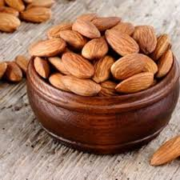
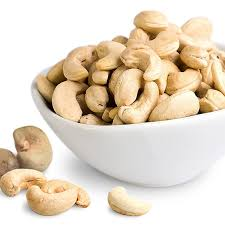
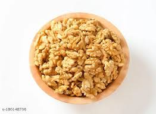

Almonds are nutrient-rich nuts packed with healthy fats, protein, fiber, vitamins, and minerals. They are known to support heart health, improve brain function, and help regulate blood sugar levels. Enjoy almonds as a wholesome snack, add them to your breakfast cereals, salads, or baked goods for a delicious crunch and natural energy boost. Our almonds are carefully selected and fresh to ensure the best quality for your health and taste.
Price: $10

Cashews
Cashews are creamy, buttery nuts packed with heart-healthy fats, protein, and important minerals like magnesium and zinc. They help support bone health, boost immunity, and provide lasting energy. Cashews are delicious on their own or as an ingredient in cooking, baking, and snacks. Our cashews are fresh and carefully selected to ensure you get the best taste and nutrition every time.
Price: $12

Walnuts
Walnuts are a powerhouse of nutrition, rich in omega-3 fatty acids, antioxidants, and essential vitamins. They support brain health, reduce inflammation, and promote a healthy heart. These crunchy nuts are perfect for snacking, baking, or adding to salads and dishes to boost flavor and nutrition. Our walnuts are fresh, carefully sourced, and ready to provide you with natural goodness in every bite.
Price: $11

Pistachios
Pistachios are tasty, green-hued nuts loaded with protein, fiber, and antioxidants. They support healthy cholesterol levels, aid digestion, and provide long-lasting energy. Great as a snack or in desserts and savory dishes, our premium pistachios are roasted and packaged to preserve freshness and flavor.
Price: $13
Hazelnuts
Hazelnuts are crunchy, sweet-flavored nuts rich in healthy fats, vitamins E and B, and minerals. They help maintain heart health, support brain function, and improve skin health. Enjoy them raw, roasted, or blended into spreads and recipes. Our hazelnuts are premium quality, ensuring maximum taste and nutrition.